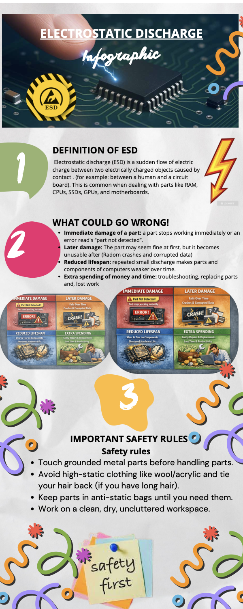
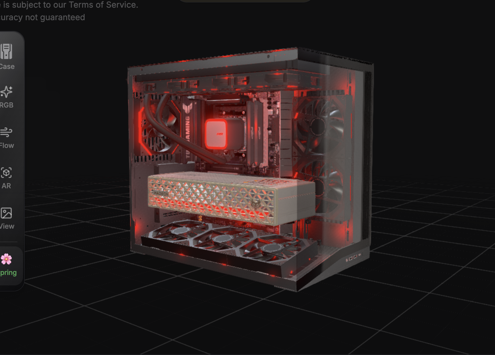
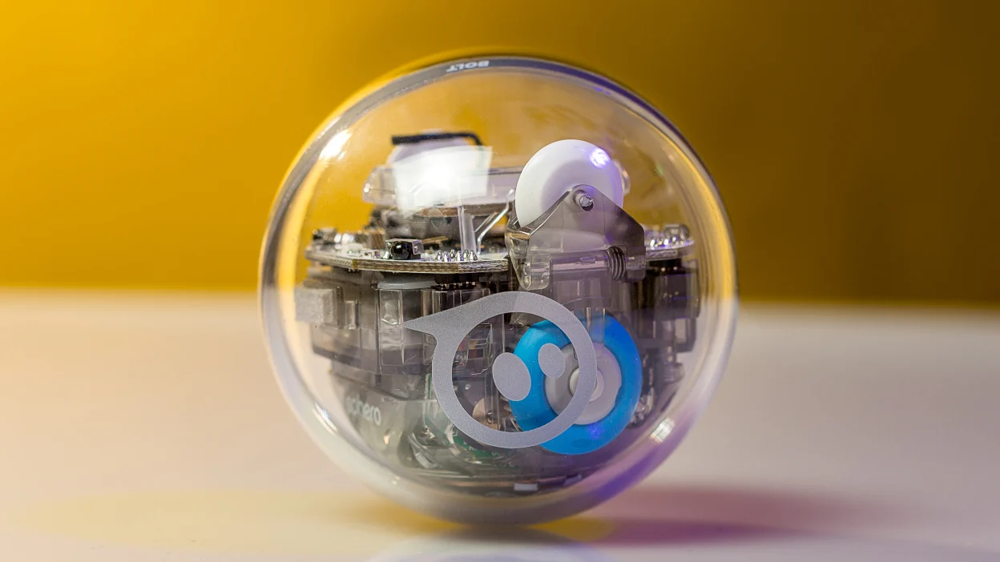

Artifact 1

Description: This assignment was called Smiley, which we had to solder pins using soldering irons. We had to demonstrate very careful procedures so we ensured safety for others in the classroom. The reason it's called Smiley is because when it turns on it lights up in the shape of a smile.
Reflection: This project helped me learn how important patience and safety are when working with electronics. I had to solder carefully so the pins connected properly without damaging the board or creating unsafe mistakes. Seeing the LEDs light up in a smile shape showed me that small details in hardware can make a project work successfully.
Artifact 2

Description: This assignment was about computer engineering safety and precautions. I focused on ESD, which means electrostatic discharge. My infographic explained how static electricity can damage computer parts like RAM, CPUs, SSDs, GPUs, and motherboards. It also showed safety rules such as touching grounded metal before handling parts, avoiding high-static clothing, keeping parts in anti-static bags, and working in a clean workspace.
Reflection: This assignment helped me understand that safety in computer engineering is not only about protecting people, but also about protecting the parts being used. I learned that static electricity can cause immediate damage, hidden damage that appears later, or reduce the lifespan of computer components. In future classes or jobs, I can use these precautions to handle hardware more carefully and avoid wasting time or money replacing damaged parts.
Artifact 3

Description: This assignment was called Build the Computer of your Dreams. I had to plan a complete computer setup with a $2500 budget using parts from Canada Computers. The build needed compatible parts that matched the purpose of the computer, such as gaming, multimedia, school work, or future career use. I also had to think about future-proofing, pricing, part links, taxes, and why each component was selected.
Reflection: This assignment helped me understand that building a computer is not just about choosing the most expensive parts. I had to think about compatibility, value, performance, and how the computer would support future needs. I learned that parts like the CPU, motherboard, RAM, GPU, storage, power supply, case, and cooling all have to work together. This project made me better at researching hardware and planning a system before building it.
Artifact 4

Description: This assignment was called The Maze Challenge. I had to program a Sphero BOLT to complete a maze track using block coding. The goal was not just to make it fast, but to show logic by planning the turns, choosing where to slow down, and using the correct LED colors. Green meant the Sphero was moving, red meant it stopped, and blue meant it finished the track.
Reflection: This project helped me understand sequencing, testing, and problem solving in coding. I had to think about speed, timing, angles, and turns so the Sphero could stay on the track and finish without being touched. Each test helped me see what needed to change, such as slowing down before turns or adjusting how long the robot moved. This assignment showed me that good programming takes planning and improvement, not just one try.